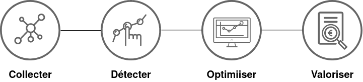

Dessin animé: les meilleurs à voir, notre sélection dénicher pour vous!

Fan de dessin animer ?
Vous êtes à la recherche d'une bonne série et vou savez pas ou commencer ?
Jeter un cou d'œil sur ce qu'on vous a dénicher selon les meilleurs critères de notation
Description
Dans ce projet nous faisant une analyse comparatif entre les déssin animé dominant le marché pour proposer à la fin une selction des Top 10 selon défférent critéres: notation, votes, episodes ...Cet ensemble de données représente tous les animes explorés à partir de Crunchyroll dans ce référentiel , contenant sa note, le nombre de votes et le genre.
Colonnes :
- anime - nom anglais de l'anime
- anime_url - URL d'anime sur Crunchyroll
- anime_img - URL d'image d'anime hébergée par Crunchyroll
- episodes - nombre d'épisodes hébergés par Crunchyroll de l'anime
- votes - nombre de votes de l'anime
- weight - la somme des étoiles notées reçues de l'anime
- rate - une note moyenne sur 5 étoiles de l'anime
- genre - 29 genres différents de l'anime, pour chaque genre avec 1 ou 0;
action|adventure|comedy|drama|family|fantasy|food|harem|historical|horror|idols|isekai|jdrama|magical girls|martial arts|mecha|music|mystery|post-apocalyptic|romance|sci-fi|seinen|sgdrama|shojo|shonen|slice of life|sports|supernatural|thriller
Nettoyage des données
Nous avons eu besoin de nettoyer les données extraite sur kaggle pour correspondre a nos besoins d'étude
Pour cela nous avons :
- Supprimer les déssin animé qui ont 0 episodes
- Supprimer les déssin animé sans images
- Concatiner le genre du déssin animé dans une seule cellule
- Normaliser le nombres d'épisodes, nombre de votes et de critique
Prototypes de visualisation utilisé
Nous avons utiliser D3plus, une bibliothèque javascript qui étend D3.js pour permettre des visualisations rapides, simple et représentatif.
- Grid
- BubbleChart
- BarChart
- PieChart
- Mosaic
- Scatter
- TreeMap
- Radar
Difficultés rencontrées
Nous n'avons pas eu beaucoup de difficultés dans l'utilisation de D3plus et sa prise en main si ce n'est sa documentation pas trop pratique notamment pour la modification des classe prédéfini et pas assez d'informations dans les forums de discussion.
Analyse des résultats
Top 10 des dessins annimées selon tout les critéres
- Naruto Shippuuden
- Shugo Chara
- BLEACH Naruto
- Naruto
- Gintama
- Hayate the Combat Butler!
- Natsume Yuujinchou
- Blue Exorcist
- Durarara!!
- Time of Eve
Liens d'inspération
Nous nous sommes inspiré de ses traveaux suivant qui ont utiliser la meme base de données que la notre.
- EDA Animes Crunchyroll
- Starter: Crunchyroll animes database
- What Influences the Rating of Animes & More
Membres de l'équipe
- BALIT Habib
- MOURAH Amel
- IFRENE Tinhinane
- IFRENE Chafia